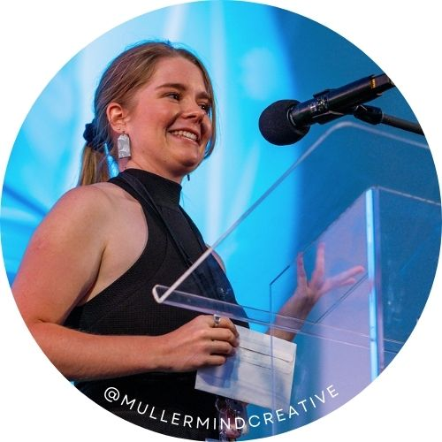

Arts and events management | Creative problem-solving
About me:
With a vast array of experiences in the creative industries, I am able to provide a passionate approach to
problem solving and achieving goals within set timeframes. I look forward to working with you on your next
project!

My Services
Public Art Consulting
Project Management
Artist Liaison
Working with all stakeholders
Art Valuations
Valuing individual artworks or collections
Including Public Art collections
Event Coordination
From planning to delivery
Working to a budget
Workshops, exhibitions, galas
Curatorial Services
Selecting and curating artwork
Art prizes, community exhibitions, interior design
Creative Problem Solving | Strategic Planning and Implementation | Change Making | Engagement and Facilitation |
Community Consultation | Project Managment | Partnerships